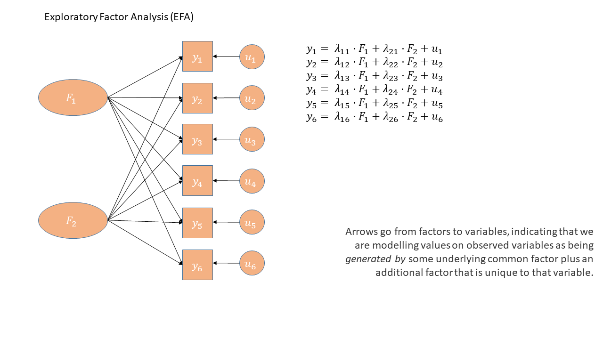
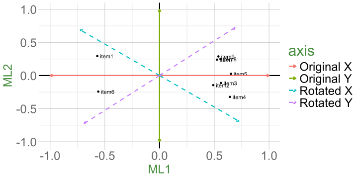
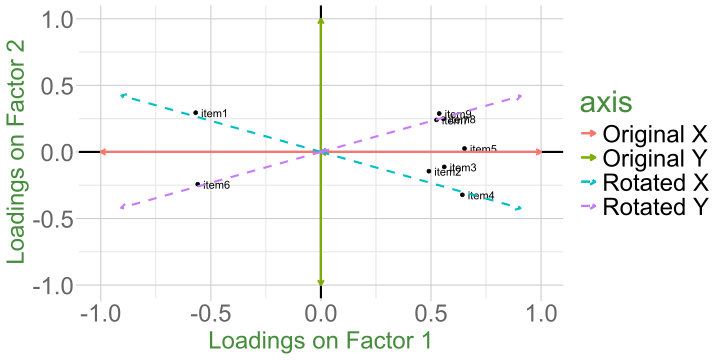

| variable | wording |
|---|---|
| Q1 | I think cake is the best food |
| Q2 | I feel great when I eat cake |
| Q3 | I often eat cake |
Exploratory Factor Analysis (EFA)
Data Analysis for Psychology in R 3
Dr Josiah King
Psychology, PPLS
University of Edinburgh
Course Overview
|
multilevel modelling working with group structured data |
regression refresher |
| the multilevel model | |
| more complex groupings | |
| centering, assumptions, and diagnostics | |
| recap | |
|
factor analysis working with multi-item measures |
measurement and dimensionality |
| exploring underlying constructs (EFA) | |
| testing theoretical models (CFA) | |
| reliability and validity | |
| recap & exam prep |
This week
- EFA vs PCA
- EFA in R
- Item Suitability, Factor Extraction Methods
- Rotations & Simple Structures
- Evaluating Factor Solutions
EFA vs PCA
Real friends don’t let friends do PCA. (W. Revelle, 25 October 2020)
Questions to ask before you start
PCA
- Why are your variables correlated?
- Agnostic/don’t care
- What are your goals?
- Reduce reduce reduce!
EFA
- Why are your variables correlated?
- Believe there exist underlying “causes” of these correlations
- What are your goals?
- Reduce, but also learn about/model their underlying (latent) causes
“Latent variables”?
Still just “dimensions” but..
Theorized common cause of responses to a set of variables
- Explain correlations between measured variables
- Held to be real (can never test this)
graphical thinking
PCA versus EFA: How are they different?
PCA
- The observed measures are independent variables
- The component is a bit like a dependent variable (it’s really just a composite!)
- Components sequentially capture as much variance in the measures as possible
- Components are determinate
EFA
- The observed measures are dependent variables
- The factor is the independent variable
- Models the relationships between variables
- Factors are indeterminate
As a diagram (PCA)

As a diagram (PCA)
As a diagram (EFA)
Debates!
Put these into two groups - those you feel more comfortable with conceptualising as latent variables and those you don’t:
(no right/wrong answers)
- Anxiety
- Depression
- Exposure to distressing events
- Trust
- Socioeconomic Status
- Motivation
- Identity
EFA: a model of observed relationships
We have some observed variables that are correlated
EFA tries to explain these patterns of correlations
Aim is that the correlations between items after removing the effect of the Factor are zero
\[ \begin{align} \rho(Q_{1},Q_{2} | \textrm{Love-Of-Cake})=0 \\ \rho(Q_{1},Q_{3} | \textrm{Love-Of-Cake})=0 \\ \rho(Q_{2},Q_{3} | \textrm{Love-Of-Cake})=0 \\ \end{align} \]
Sources of variance
- In order to model these correlations, EFA looks to distinguish between common and unique variance.
\[ \begin{equation} var(\text{total}) = var(\text{common}) + \underbrace{var(\text{specific}) + var(\text{error})}_{\text{unique variance}} \end{equation} \]
| common variance | (co)variance shared across items | true and shared |
| specific variance | variance specific to an item that is not shared with any other items | true and unique |
| error variance | variance due to measurement error | not ‘true’, unique |
Optional: general factor model equation
\[\mathbf{\Sigma}=\mathbf{\Lambda}\mathbf{\Phi}\mathbf{\Lambda'}+\mathbf{\Psi}\]
\(\mathbf{\Sigma}\): A \(p \times p\) observed correlation matrix (from data)
\(\mathbf{\Lambda}\): A \(p \times m\) matrix of factor loadings (relates the \(m\) factors to the \(p\) items)
\(\mathbf{\Phi}\): An \(m \times m\) matrix of correlations between factors (“goes away” with orthogonal factors)
\(\mathbf{\Psi}\): A diagonal matrix with \(p\) elements indicating unique (error) variance for each item
Optional: general factor model equation
\[ \begin{align} \text{Outcome} &= \quad\quad\quad\text{Model} &+ \text{Error} \quad\quad\quad\quad\quad \\ \quad \\ \mathbf{\Sigma} &= \quad\quad\quad\mathbf{\Lambda}\mathbf{\Lambda'} &+ \mathbf{\Psi} \quad\quad\quad\quad\quad\quad \\ \quad \\ \begin{bmatrix} 1 & 0.53 & 0.57 & 0.57 \\ 0.53 & 1 & 0.54 & 0.56 \\ 0.57 & 0.54 & 1 & 0.56 \\ 0.57 & 0.56 & 0.56 & 1 \\ \end{bmatrix} &= \begin{bmatrix} 0.747 \\ 0.725 \\ 0.746 \\ 0.764 \\ \end{bmatrix} \begin{bmatrix} 0.747 & 0.725 & 0.746 & 0.764 \\ \end{bmatrix} &+ \begin{bmatrix} 0.44 & 0 & 0 & 0 \\ 0 & 0.47 & 0 & 0 \\ 0 & 0 & 0.44 & 0 \\ 0 & 0 & 0 & 0.42 \\ \end{bmatrix} \\ \quad \\ \begin{bmatrix} 1 & 0.53 & 0.57 & 0.57 \\ 0.53 & 1 & 0.54 & 0.56 \\ 0.57 & 0.54 & 1 & 0.56 \\ 0.57 & 0.56 & 0.56 & 1 \\ \end{bmatrix} &= \begin{bmatrix} 0.56 & 0.54 & 0.56 & 0.57 \\ 0.54 & 0.53 & 0.54 & 0.55 \\ 0.56 & 0.54 & 0.56 & 0.57 \\ 0.57 & 0.55 & 0.57 & 0.58 \\ \end{bmatrix} &+ \begin{bmatrix} 0.44 & 0 & 0 & 0 \\ 0 & 0.47 & 0 & 0 \\ 0 & 0 & 0.44 & 0 \\ 0 & 0 & 0 & 0.42 \\ \end{bmatrix} \\ \end{align} \]
We make assumptions when we use models
As EFA is a model, just like linear models and other statistical tools, using it requires us to make some assumptions:
- The error terms are uncorrelated
- The residuals/errors are not correlated with the factor
- Relationships between items and factors should be linear, although there are models that can account for nonlinear relationships
We make assumptions when we use models (2)
What does an EFA look like?
Some data
| variable | wording |
|---|---|
| item1 | I worry that people will think I'm awkward or strange in social situations. |
| item2 | I often fear that others will criticize me after a social event. |
| item3 | I'm afraid that I will embarrass myself in front of others. |
| item4 | I feel self-conscious in social situations, worrying about how others perceive me. |
| item5 | I often avoid social situations because I’m afraid I will say something wrong or be judged. |
| item6 | I avoid social gatherings because I fear feeling uncomfortable. |
| item7 | I try to stay away from events where I don’t know many people. |
| item8 | I often cancel plans because I feel anxious about being around others. |
| item9 | I prefer to spend time alone rather than in social situations. |
EFA in R
Factor Analysis using method = ml
Call: fa(r = eg_data, nfactors = 2, rotate = "oblimin", fm = "ml")
Standardized loadings (pattern matrix) based upon correlation matrix
ML1 ML2 h2 u2 com
item_1 0.60 0.03 0.37 0.63 1.0
item_2 0.52 0.09 0.31 0.69 1.1
item_3 0.67 -0.05 0.43 0.57 1.0
item_4 0.62 -0.08 0.36 0.64 1.0
item_5 0.42 0.35 0.40 0.60 1.9
item_6 -0.03 0.55 0.30 0.70 1.0
item_7 -0.05 0.69 0.45 0.55 1.0
item_8 0.12 0.44 0.24 0.76 1.2
item_9 0.11 0.34 0.15 0.85 1.2
ML1 ML2
SS loadings 1.73 1.29
Proportion Var 0.19 0.14
Cumulative Var 0.19 0.33
Proportion Explained 0.57 0.43
Cumulative Proportion 0.57 1.00
With factor correlations of
ML1 ML2
ML1 1.00 0.34
ML2 0.34 1.00
Mean item complexity = 1.2
Test of the hypothesis that 2 factors are sufficient.
df null model = 36 with the objective function = 1.46 with Chi Square = 578
df of the model are 19 and the objective function was 0.04
The root mean square of the residuals (RMSR) is 0.02
The df corrected root mean square of the residuals is 0.03
The harmonic n.obs is 400 with the empirical chi square 15.6 with prob < 0.68
The total n.obs was 400 with Likelihood Chi Square = 17.6 with prob < 0.55
Tucker Lewis Index of factoring reliability = 1
RMSEA index = 0 and the 90 % confidence intervals are 0 0.04
BIC = -96.2
Fit based upon off diagonal values = 0.99
Measures of factor score adequacy
ML1 ML2
Correlation of (regression) scores with factors 0.86 0.82
Multiple R square of scores with factors 0.74 0.67
Minimum correlation of possible factor scores 0.47 0.34| variable | wording |
|---|---|
| item1 | I worry that people will think I'm awkward or strange in social situations. |
| item2 | I often fear that others will criticize me after a social event. |
| item3 | I'm afraid that I will embarrass myself in front of others. |
| item4 | I feel self-conscious in social situations, worrying about how others perceive me. |
| item5 | I often avoid social situations because I’m afraid I will say something wrong or be judged. |
| item6 | I avoid social gatherings because I fear feeling uncomfortable. |
| item7 | I try to stay away from events where I don’t know many people. |
| item8 | I often cancel plans because I feel anxious about being around others. |
| item9 | I prefer to spend time alone rather than in social situations. |
What does an EFA look like?
Factor Analysis using method = ml
Call: fa(r = eg_data, nfactors = 2, rotate = "oblimin", fm = "ml")
Standardized loadings (pattern matrix) based upon correlation matrix
ML1 ML2 h2 u2 com
item_1 0.60 0.03 0.37 0.63 1.0
item_2 0.52 0.09 0.31 0.69 1.1
item_3 0.67 -0.05 0.43 0.57 1.0
item_4 0.62 -0.08 0.36 0.64 1.0
item_5 0.42 0.35 0.40 0.60 1.9
item_6 -0.03 0.55 0.30 0.70 1.0
item_7 -0.05 0.69 0.45 0.55 1.0
item_8 0.12 0.44 0.24 0.76 1.2
item_9 0.11 0.34 0.15 0.85 1.2
ML1 ML2
SS loadings 1.73 1.29
Proportion Var 0.19 0.14
Cumulative Var 0.19 0.33
Proportion Explained 0.57 0.43
Cumulative Proportion 0.57 1.00
With factor correlations of
ML1 ML2
ML1 1.00 0.34
ML2 0.34 1.00
Mean item complexity = 1.2
Test of the hypothesis that 2 factors are sufficient.
df null model = 36 with the objective function = 1.46 with Chi Square = 578
df of the model are 19 and the objective function was 0.04
The root mean square of the residuals (RMSR) is 0.02
The df corrected root mean square of the residuals is 0.03
The harmonic n.obs is 400 with the empirical chi square 15.6 with prob < 0.68
The total n.obs was 400 with Likelihood Chi Square = 17.6 with prob < 0.55
Tucker Lewis Index of factoring reliability = 1
RMSEA index = 0 and the 90 % confidence intervals are 0 0.04
BIC = -96.2
Fit based upon off diagonal values = 0.99
Measures of factor score adequacy
ML1 ML2
Correlation of (regression) scores with factors 0.86 0.82
Multiple R square of scores with factors 0.74 0.67
Minimum correlation of possible factor scores 0.47 0.34Factor loadings, like PCA loadings, show the relationship of each measured variable to each factor.
Range between -1.00 and 1.00
Larger absolute values = stronger relationship between measured variable and factor
Primary loadings: refer to the factor on which a measured variable has it’s highest loading
Cross-loadings: refer to all other factor loadings for a given measured variable
Square of a factor loading tells us how much item variance is explained by a factor
Doing EFA - Overview
So how do we move from data and correlations to a factor analysis?
- check suitability of items.
- decide on factor extraction method and rotation.
- examine plausible number of factors.
- based on 3, choose the range to examine from \(n_{min}\) factors to \(n_{max}\) factors.
- do EFA, extracting from \(n_{min}\) to \(n_{max}\) factors. Compare each of these ‘solutions’ in terms of structure, variance explained, and — by examining how the factors from each solution relate to the observed items — assess how much theoretical sense they make.
- if the aim is to develop a scale for future use - consider removing “problematic” items and start over again.
Item Suitability, Factor Extraction
- check suitability of items.
- decide on factor extraction method and rotation.
examine plausible number of factors.
based on 3, choose the range to examine from \(n_{min}\) factors to \(n_{max}\) factors.
do EFA, extracting from \(n_{min}\) to \(n_{max}\) factors. Compare each of these ‘solutions’ in terms of structure, variance explained, and — by examining how the factors from each solution relate to the observed items — assess how much theoretical sense they make.
if the aim is to develop a scale for future use - consider removing “problematic” items and start over again.
Data suitability
In short “is the data correlated?”.
- check correlation matrix (ideally roughly > .20)
- we can take this a step further and calculate the squared multiple correlations (SMC)
- regress each item on all other items (e.g., \(R^2\) for item1 ~ all other items)
- tells us how much shared variation there is between an item and all other items
- there are also some statistical tests (e.g. Bartlett’s test) and metrics (KMO adequacy)
Extraction Methods
- For PCA, we discussed the use of the eigen-decomposition
- this isn’t estimation, this is just a calculation
- For EFA, we have a model (with error), so we need to estimate the model parameters (the factor loadings)
Extraction Methods (2)
- Maximum Likelihood Estimation (ml)
- Principal Axis Factoring (paf)
- Minimum Residuals (minres)
Maximum likelihood estimation
Find values for the parameters that maximize the likelihood of obtaining the observed correlation matrix
Pros:
- quick and easy, very generalisable estimation method
- we can get various “fit” statistics (useful for model comparisons)
Cons:
- Assumes a normal distribution
- Sometimes fails to converge
- Sometimes produces solutions with impossible values
- Factor loadings \(> 1\) (Heywood cases)
- Factor correlations \(> 1\)
Non-continuous data
Sometimes (often) even when we assume a construct is continuous, we measure it with a discrete scale.
E.g., Likert!
Simulation studies tend to suggest \(\geq 5\) response categories can be treated as continuous
- provided that they have all been used!!
Non-continuous data
Polychoric Correlations
- Estimates of the correlation between two theorized normally distributed continuous variables, based on their observed ordinal manifestations.
| disagree | neither | agree | |
|---|---|---|---|
| agree | 0 | 38 | 37 |
| neither | 38 | 566 | 87 |
| disagree | 74 | 158 | 2 |
Choosing an extraction method
The straightforward option, as with many statistical models, is ML.
If ML solutions fail to converge, principal axis is a simple approach which typically yields reliable results.
If concerns over the distribution of variables, use PAF on the polychoric correlations.
Factor rotation & Simple Structures
- check suitability of items
- decide on factor extraction method and rotation
examine plausible number of factors
based on 3, choose the range to examine from \(n_{min}\) factors to \(n_{max}\) factors
do EFA, extracting from \(n_{min}\) to \(n_{max}\) factors. Compare each of these ‘solutions’ in terms of structure, variance explained, and — by examining how the factors from each solution relate to the observed items — assess how much theoretical sense they make.
if the aim is to develop a scale for future use - consider removing “problematic” items and start over again.
What is rotation?
Factor solutions can sometimes be complex to interpret.
- the pattern of the factor loadings is not clear.
- The difference between the primary and cross-loadings is small
Loadings:
ML1 ML2
item1 -0.569 0.295
item2 0.490 -0.145
item3 0.560 -0.112
item4 0.642 -0.322
item5 0.652
item6 -0.560 -0.242
item7 0.525 0.240
item8 0.556 0.249
item9 0.537 0.288
ML1 ML2
SS loadings 2.903 0.487
Proportion Var 0.323 0.054
Cumulative Var 0.323 0.377Types of rotation
Orthogonal

Oblique

Why rotate?
Factor rotation is an approach to clarifying the relationships between items and factors.
- Rotation aims to maximize the relationship of a measured item with a factor.
- That is, make the primary loading big and cross-loadings small.
Rotational Indeterminacy
Rotational indeterminacy means that there are an infinite number of pairs of factor loadings and factor score matrices which will fit the data equally well, and are thus indistinguishable by any numeric criteria
\[\mathbf{\Sigma}=\mathbf{\Lambda}\color{orange}{\mathbf{\Phi}}\mathbf{\Lambda'}+\mathbf{\Psi}\]
There is no unique solution to the factor problem
We can not numerically tell rotated solutions apart, so theoretical coherence of the solution plays a big role!
How do I choose which rotation?
Easy recommendation: always to choose oblique.
Why?
It is very unlikely factors have correlations of 0
If they are close to zero, this is allowed within oblique rotation
The whole approach is exploratory, and the constraint is unnecessary.
However, there is a catch…
Interpretation and oblique rotation
When we have an obliquely rotated solution, we need to draw a distinction between the pattern and structure matrix.
For orthogonal rotations, these are identical
Pattern Matrix
matrix of regression weights (loadings) from factors to variables
\(item1 = \lambda_1 Factor1 + \lambda_2 Factor2 + u_{item1}\)
Loadings:
ML1 ML2
item_1 0.596
item_2 0.520
item_3 0.670
item_4 0.624
item_5 0.421 0.355
item_6 0.553
item_7 0.689
item_8 0.122 0.437
item_9 0.109 0.338
ML1 ML2
SS loadings 1.671 1.229
Proportion Var 0.186 0.137
Cumulative Var 0.186 0.322Structure Matrix
matrix of correlations between factors and variables.
\(cor(item1, Factor1)\)
Loadings:
ML1 ML2
item_1 0.607 0.233
item_2 0.550 0.263
item_3 0.653 0.175
item_4 0.597 0.132
item_5 0.541 0.497
item_6 0.157 0.543
item_7 0.183 0.672
item_8 0.270 0.478
item_9 0.223 0.374
ML1 ML2
SS loadings 1.925 1.534
Proportion Var 0.214 0.170
Cumulative Var 0.214 0.384How many factors?
- check suitability of items
- decide on factor extraction method and rotation
- examine plausible number of factors
- based on 3, choose the range to examine from \(n_{min}\) factors to \(n_{max}\) factors
do EFA, extracting from \(n_{min}\) to \(n_{max}\) factors. Compare each of these ‘solutions’ in terms of structure, variance explained, and — by examining how the factors from each solution relate to the observed items — assess how much theoretical sense they make.
if the aim is to develop a scale for future use - consider removing “problematic” items and start over again.
How many factors?
- Scree plots
- Parallel Analysis
- MAP
But… if there’s no strong steer, then we want a range.
- Treat MAP as a minimum
- PA as a maximum
- Explore all solutions in this range and select the one that yields the best numerically and theoretically.
Parallel analysis suggests that the number of factors = 2 and the number of components = 2 The Velicer MAP achieves a minimum of 0.03 with 1 factors Evaluating factor solutions
- check suitability of items
- decide on factor extraction method and rotation.
- examine plausible number of factors
- based on 3, choose the range to examine from \(n_{min}\) factors to \(n_{max}\) factors
- do EFA, extracting from \(n_{min}\) to \(n_{max}\) factors. Compare each of these ‘solutions’ in terms of structure, variance explained, and — by examining how the factors from each solution relate to the observed items — assess how much theoretical sense they make.
if the aim is to develop a scale for future use - consider removing “problematic” items and start over again.
The EFA output - loading matrix
The EFA output - loading matrix (2)
The EFA output - communalities
The EFA output - uniqueness
The EFA output - complexity
The EFA output - variance accounted for
The EFA output - variance accounted for (2)
The EFA output - variance accounted for (3)
The EFA output - variance accounted for (4)
The EFA output - factor correlations
Evaluating factor solutions - where to start
- variance accounted for
- in total (field dependent)
- each factor (relative to one another)
- salient loadings
- meaning of factors is based on size and sign of ‘salient’ loadings
- we decide what is ‘salient’
- in most research this is \(\ge|.3|\) or \(\ge|.4|\)
- Each factor has \(\geq 3\) salient loadings (ideally \(\geq 3\) primary loadings)
- if not, may have extracted too many factors
Evaluating factor solutions - looking for trouble
- Items with no salient loadings?
- maybe a problem item, which should be removed
- maybe signal presence of another factor
- Items with multiple salient loadings (cross-loadings)?
- look at item complexity values.
- makes defining the factors more difficult
- Heywood cases
- factor loadings \(\geq |1|\)
- communalities \(\geq |1|\)
- something is wrong; we do not trust these results
- Try different rotation, estimation method, eliminate items, rethink if FA is what you actually want to do
Evaluating factor solutions - list of criteria
how much variance is accounted for by a solution?
do all factors load on 3+ items at a salient level?
do all items have at least one loading at a salient level?
are there any highly complex items?
are there any “Heywood cases” (communalities or standardised loadings that are >1)?
is the factor structure (items that load on to each factor) coherent, and does it make theoretical sense?
Evaluating factor solutions - cautions!
Remember: If we choose to delete one or more items, we must start back at the beginning, and go back to determining how many factors to extract
Very Important: If one or more factors don’t make sense, then either the items are bad, the theory is bad, the analysis is bad, or all three are bad!
💩 The “garbage in garbage out” principle always applies
- PCA and factor analysis cannot turn bad data into good data
Our example
Loadings:
ML1 ML2
item_1 0.596
item_2 0.520
item_3 0.670
item_4 0.624
item_5 0.421 0.355
item_6 0.553
item_7 0.689
item_8 0.122 0.437
item_9 0.109 0.338
ML1 ML2
SS loadings 1.671 1.229
Proportion Var 0.186 0.137
Cumulative Var 0.186 0.322 ML1 ML2
ML1 1.000 0.339
ML2 0.339 1.000
Loadings:
ML2 ML1 ML3
item_1 0.724
item_2 0.102 0.566
item_3 0.493 0.229
item_4 0.408 0.274
item_5 0.336 0.240 0.251
item_6 0.535
item_7 0.709
item_8 0.407 0.290
item_9 0.313 0.159
ML2 ML1 ML3
SS loadings 1.178 1.012 0.629
Proportion Var 0.131 0.112 0.070
Cumulative Var 0.131 0.243 0.313 ML2 ML1 ML3
ML2 1.000 0.266 0.284
ML1 0.266 1.000 0.593
ML3 0.284 0.593 1.000Our example (2)
Our example (3)
Loadings:
ML1 ML2
item_1 0.602
item_2 0.502 0.103
item_3 0.667
item_4 0.608
item_6 0.566
item_7 0.641
item_8 0.127 0.472
item_9 0.105 0.352
ML1 ML2
SS loadings 1.459 1.095
Proportion Var 0.182 0.137
Cumulative Var 0.182 0.319 ML1 ML2
ML1 1.000 0.301
ML2 0.301 1.000
Loadings:
ML2 ML3 ML1
item_1 0.758
item_2 0.583
item_3 0.394 0.328
item_4 0.414 0.260
item_6 0.552
item_7 0.644
item_8 0.451 0.309 -0.120
item_9 0.331 0.144
ML2 ML3 ML1
SS loadings 1.046 0.788 0.773
Proportion Var 0.131 0.098 0.097
Cumulative Var 0.131 0.229 0.326 ML2 ML3 ML1
ML2 1.000 0.261 0.192
ML3 0.261 1.000 0.557
ML1 0.192 0.557 1.000Our example (4)
| variable | wording |
|---|---|
| item1 | I worry that people will think I'm awkward or strange in social situations. |
| item2 | I often fear that others will criticize me after a social event. |
| item3 | I'm afraid that I will embarrass myself in front of others. |
| item4 | I feel self-conscious in social situations, worrying about how others perceive me. |
| item5 | I often avoid social situations because I’m afraid I will say something wrong or be judged. |
| item6 | I avoid social gatherings because I fear feeling uncomfortable. |
| item7 | I try to stay away from events where I don’t know many people. |
| item8 | I often cancel plans because I feel anxious about being around others. |
| item9 | I prefer to spend time alone rather than in social situations. |
Loadings:
ML1 ML2
item_1 0.602
item_2 0.502 0.103
item_3 0.667
item_4 0.608
item_6 0.566
item_7 0.641
item_8 0.127 0.472
item_9 0.105 0.352
ML1 ML2
SS loadings 1.459 1.095
Proportion Var 0.182 0.137
Cumulative Var 0.182 0.319 ML1 ML2
ML1 1.000 0.301
ML2 0.301 1.000